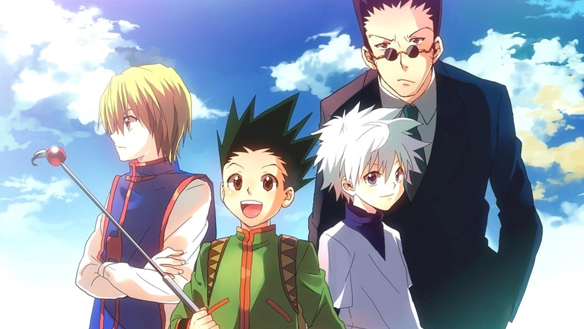

A propos de Gon Freecss
Gon Freecss (ゴン=フリークス, Gon Furīkusu) est le protagoniste principal de Hunter × Hunter. Il est le fils du célèbre Hunter, Jin Freecss, et a comme quête de retrouver son père
Gon et ses amis proches
Plus d'informations
- Occupation : Hunter
- Type de nen : Renforcement
- Capacités de Nen : Janjanken
Pierre
Feuille
Ciseaux - Numéro pendant l'examen hunter : 405
Amis
Gon a 4 amis proches. Son meilleur ami est Kirua, il est cool aussi.